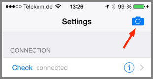

QR codes
To setup the OwnTracks app (iOS only currently), you can use QR codes or specially-constructed URLs to configure the app. This is currently implemented for
- Hosted mode and
- iBeacons.
The QR codes can be scanned from the settings tab within the app

Alternatively, you can use an external QR reader app (such as Qrafter) or, even easier, you provide the URL and view it through the device's mobile Web browser.

QR codes can be prepared with a number of tools: there are online offerings, and there is a standalone C program by the name of qrencode which works very well:
qrencode -l H -v 10 -d 300 -o mybeacon.png 'owntracks:///beacon?name=MyBeacon&uuid=12345678-1234-1234-1234-123456789A&major=2&minor=1'
iBeacon QR URL
- scheme =
owntracks - host =
<empty> - path =
/beacon - query =
name=<name>&uuid=<uuid>&major=<major>&minor=<minor>
major and minor are optional
Example:
owntracks:///beacon?name=MyBeacon&uuid=12345678-1234-1234-1234-123456789A&major=2&minor=1

Hosted mode QR URL
- scheme =
owntracks - host =
<empty> - path =
/hosted - query =
user=<user>&device=<device>&token=<token>
Example:
owntracks:///hosted?user=user&device=device&token=token